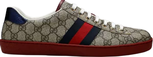
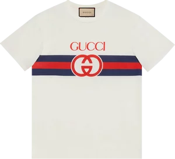
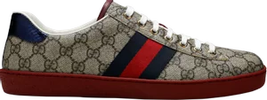
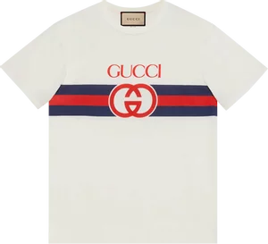

Gucci
Bags
Shoes
apparel
 

Guccio Gucci S.p.A.,[1][2] doing business as Gucci (/ˈɡuːtʃi/ ⓘ GOO-chee, Italian: [ˈɡuttʃi]), is an Italian luxury fashion house based in Florence, Italy.[3][4][5] Its product lines include handbags, ready-to-wear, footwear, accessories, and home decoration; and it licenses its name and branding to Coty for fragrance and cosmetics under the name Gucci Beauty.[6]
Gucci was founded in 1921 by Guccio Gucci (1881–1953) in Florence, Tuscany. Under the direction of Aldo Gucci (son of Guccio), Gucci became a worldwide-known brand, an icon of the Italian dolce vita period. Following family feuds during the 1980s, the Gucci family was entirely ousted from the capital of the company by 1993. After this crisis, the brand was revived and in 1999 Gucci became a subsidiary of the French conglomerate PPR, which later renamed itself to Kering.
In 2023, Gucci operated 538 stores with 20,711 employees, and generated €9.9 billion in sales.[7] Jean-François Palus has been CEO of Gucci since July 2023,[8] and Sabato De Sarno became creative director in January 2023.[9][10]
History
1921 birth in Florence
See also: Guccio Gucci
The founder Guccio Gucci
The Gucci family claims its origins are rooted in the merchant city of Florence since around 1410. Guccio Giovanbattista Giacinto Dario Maria Gucci (1881–1953) left Florence for Paris, and settled in London in 1897 to work at the high-end Savoy Hotel. While working as a bellhop there, he would load/unload the luggage of the hotel's wealthy clients, learning about their tastes in fashion, quality, fabrics, and traveling conditions. He later worked four years for the Compagnie des Wagons-Lits, the European rail company that specialized in upscale travel leisure, thus further enhancing his experience with luxurious traveling lifestyles. After World War I, he worked for the maker of fine luggage Franzi.[11][12]
In 1921, Guccio Gucci bought his own shop on Via della Vigna Nuova in Florence, Azienda Individuale Guccio Gucci,[13] where he sold imported leather luggage. He also opened a small workshop to have his own leather goods made by local craftsmen. Eventually, a larger workshop had to be acquired to house Gucci's sixty artisans. In 1935, the invasion of Ethiopia by Mussolini led the League of Nations to impose a trade embargo on Italy. Leather became scarce, pushing Guccio Gucci to introduce other fabrics in the composition of the products, such as raffia, wicker, wood, linen and jute. The rombi motif, a Gucci signature, was created. The Guccis developed a new tanning technique to produce "cuoio grasso", which became a Gucci trademark. In 1937, Gucci launched its handbags.[12][11]
Guccio's wife and children all worked in the shop. Aldo, the son of Guccio, became increasingly involved in the family company since he started working there in 1925. He convinced his father to grow by opening a new shop in Rome (21 Via Condotti) in 1938, and launched more Gucci accessories (gloves, belts, wallets, keychains). During World War II, the artisans of Gucci worked on making boots for the Italian infantry.[12][11]


Guccio Gucci S.p.A.,[1][2] doing business as Gucci (/ˈɡuːtʃi/ ⓘ GOO-chee, Italian: [ˈɡuttʃi]), is an Italian luxury fashion house based in Florence, Italy.[3][4][5] Its product lines include handbags, ready-to-wear, footwear, accessories, and home decoration; and it licenses its name and branding to Coty for fragrance and cosmetics under the name Gucci Beauty.[6]
Gucci was founded in 1921 by Guccio Gucci (1881–1953) in Florence, Tuscany. Under the direction of Aldo Gucci (son of Guccio), Gucci became a worldwide-known brand, an icon of the Italian dolce vita period. Following family feuds during the 1980s, the Gucci family was entirely ousted from the capital of the company by 1993. After this crisis, the brand was revived and in 1999 Gucci became a subsidiary of the French conglomerate PPR, which later renamed itself to Kering.
In 2023, Gucci operated 538 stores with 20,711 employees, and generated €9.9 billion in sales.[7] Jean-François Palus has been CEO of Gucci since July 2023,[8] and Sabato De Sarno became creative director in January 2023.[9][10]
History
1921 birth in Florence
See also: Guccio Gucci
The founder Guccio Gucci
The Gucci family claims its origins are rooted in the merchant city of Florence since around 1410. Guccio Giovanbattista Giacinto Dario Maria Gucci (1881–1953) left Florence for Paris, and settled in London in 1897 to work at the high-end Savoy Hotel. While working as a bellhop there, he would load/unload the luggage of the hotel's wealthy clients, learning about their tastes in fashion, quality, fabrics, and traveling conditions. He later worked four years for the Compagnie des Wagons-Lits, the European rail company that specialized in upscale travel leisure, thus further enhancing his experience with luxurious traveling lifestyles. After World War I, he worked for the maker of fine luggage Franzi.[11][12]
In 1921, Guccio Gucci bought his own shop on Via della Vigna Nuova in Florence, Azienda Individuale Guccio Gucci,[13] where he sold imported leather luggage. He also opened a small workshop to have his own leather goods made by local craftsmen. Eventually, a larger workshop had to be acquired to house Gucci's sixty artisans. In 1935, the invasion of Ethiopia by Mussolini led the League of Nations to impose a trade embargo on Italy. Leather became scarce, pushing Guccio Gucci to introduce other fabrics in the composition of the products, such as raffia, wicker, wood, linen and jute. The rombi motif, a Gucci signature, was created. The Guccis developed a new tanning technique to produce "cuoio grasso", which became a Gucci trademark. In 1937, Gucci launched its handbags.[12][11]
Guccio's wife and children all worked in the shop. Aldo, the son of Guccio, became increasingly involved in the family company since he started working there in 1925. He convinced his father to grow by opening a new shop in Rome (21 Via Condotti) in 1938, and launched more Gucci accessories (gloves, belts, wallets, keychains). During World War II, the artisans of Gucci worked on making boots for the Italian infantry.[12][11]